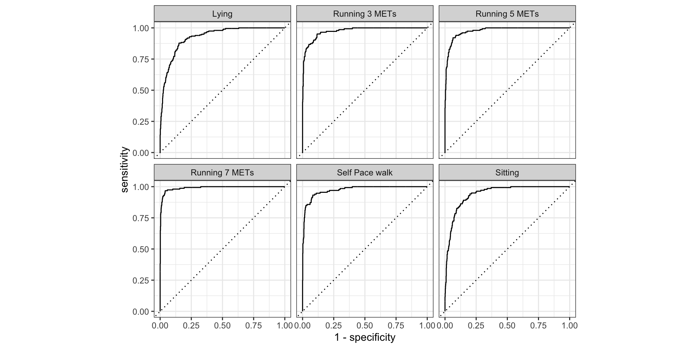

library(tidymodels)
## ── Attaching packages ─────────────────────────── tidymodels ## 0.1.4 ──
## ✔ broom 0.7.11 ✔ recipes 0.1.17
## ✔ dials 0.0.10 ✔ rsample 0.1.1
## ✔ dplyr 1.0.7 ✔ tibble 3.1.7
## ✔ ggplot2 3.3.6 ✔ tidyr 1.1.4
## ✔ infer 1.0.0 ✔ tune 0.1.6
## ✔ modeldata 0.1.1 ✔ workflows 0.2.4
## ✔ parsnip 0.1.7 ✔ workflowsets 0.1.0
## ✔ purrr 0.3.4 ✔ yardstick 0.0.9
## ── Conflicts ───────────────────────────────────────── ## tidymodels_conflicts() ──
## ✖ purrr::discard() masks scales::discard()
## ✖ dplyr::filter() masks stats::filter()
## ✖ dplyr::lag() masks stats::lag()
## ✖ recipes::step() masks stats::step()
Présentation de TidyModels
R addict
Clément Rieux, consultant en data science chez EDF
22 Septembre 2022
github.com/clem_rxx/presentation

Tidymodels
tidymodels est une collection de packages de modélisation qui est semblable à tidyverse. Créé par l’auteur de caret : Max Kuhn.
rsample: Data splitting et resamplingbroom: Manipulation des données outputrecipes: Préparation des données avant modélisationparsnip: Collection de modèlesyardstick: Evaluation metricsdials/tune: Tuning des paramètresworklows: Création de workflow …
Objectifs
- Encourager les bonnes méthodologies
- Construire une structure stable
- Permettre une grande variété de méthodologies
Comment préparer les données avec tidymodels
step_impute*()Imputation des donnéesstep_impute_mean()step_impute_linear()
step_log()step_mutate()step_sqrt()step_cut()step_dummy()step_center()step_normalize()step_corr()step_zv()
Comment choisir un modèle avec tidymodels
- Choisir un modèle
- Sélectionner le mode (Si nécessaire)
- Paramètrer le engine
1. Choisir un modèle
Pour avoir la liste des modèles disponibles : https://www.tidymodels.org/find/parsnip/
1. Choisir un modèle
Régression linéaire
2. Sélectionner le mode
3. Paramètrer le engine
Exemple de classification
Données
| age | gender | height | weight | steps | hear_rate | calories | distance | entropy_heart | entropy_setps | resting_heart | corr_heart_steps | norm_heart | intensity_karvonen | sd_norm_heart | steps_times_distance | device | activity |
|---|---|---|---|---|---|---|---|---|---|---|---|---|---|---|---|---|---|
| 20 | 1 | 168 | 65.4 | 10.77143 | 78.53130 | 0.3445329 | 0.0083269 | 6.221612 | 6.116349 | 59 | 1.0000000 | 19.53130 | 0.1385199 | 1.000000 | 0.0896921 | apple watch | Lying |
| 20 | 1 | 168 | 65.4 | 11.47532 | 78.45339 | 3.2876255 | 0.0088963 | 6.221612 | 6.116349 | 59 | 1.0000000 | 19.45339 | 0.1379673 | 1.000000 | 0.1020885 | apple watch | Lying |
| 20 | 1 | 168 | 65.4 | 12.17922 | 78.54083 | 9.4840000 | 0.0094658 | 6.221612 | 6.116349 | 59 | 1.0000000 | 19.54083 | 0.1385874 | 1.000000 | 0.1152865 | apple watch | Lying |
| 20 | 1 | 168 | 65.4 | 12.88312 | 78.62826 | 10.1545556 | 0.0100353 | 6.221612 | 6.116349 | 59 | 1.0000000 | 19.62826 | 0.1392075 | 1.000000 | 0.1292863 | apple watch | Lying |
| 20 | 1 | 168 | 65.4 | 13.58701 | 78.71569 | 10.8251111 | 0.0106048 | 6.221612 | 6.116349 | 59 | 0.9828157 | 19.71569 | 0.1398276 | 0.241567 | 0.1440877 | apple watch | Lying |
| 20 | 1 | 168 | 65.4 | 14.29091 | 78.80313 | 11.4956667 | 0.0111743 | 6.221612 | 6.116349 | 59 | 1.0000000 | 19.80313 | 0.1404477 | 0.264722 | 0.1596909 | apple watch | Sitting |
Exemple de classification
Exemple de classification
# A tibble: 18 × 4
variable type role source
<chr> <chr> <chr> <chr>
1 age numeric predictor original
2 gender numeric predictor original
3 height numeric predictor original
4 weight numeric predictor original
5 steps numeric predictor original
6 hear_rate numeric predictor original
7 calories numeric predictor original
8 distance numeric predictor original
9 entropy_heart numeric predictor original
10 entropy_setps numeric predictor original
11 resting_heart numeric predictor original
12 corr_heart_steps numeric predictor original
13 norm_heart numeric predictor original
14 intensity_karvonen numeric predictor original
15 sd_norm_heart numeric predictor original
16 steps_times_distance numeric predictor original
17 device nominal predictor original
18 activity nominal outcome originalExemple de classification
df_rec = recipe(activity ~ . , data = train_data) %>%
step_num2factor(gender,
transform = function(x) x + 1,
levels = c('femme', 'homme')) %>%
step_rm(device) %>%
step_dummy(all_nominal_predictors()) %>%
step_normalize(all_numeric()) %>%
step_zv(all_numeric()) %>%
step_corr(all_numeric_predictors(), threshold = 0.7) Exemple de classification
df_rec = recipe(activity ~ . , data = train_data) %>%
step_num2factor(gender,
transform = function(x) x + 1,
levels = c('femme', 'homme')) %>%
step_rm(device) %>%
step_dummy(all_nominal_predictors()) %>%
step_normalize(all_numeric()) %>%
step_zv(all_numeric()) %>%
step_corr(all_numeric_predictors(), threshold = 0.7) Exemple de classification
df_rec = recipe(activity ~ . , data = train_data) %>%
step_num2factor(gender,
transform = function(x) x + 1,
levels = c('femme', 'homme')) %>%
step_rm(device) %>%
step_dummy(all_nominal_predictors()) %>%
step_normalize(all_numeric()) %>%
step_zv(all_numeric()) %>%
step_corr(all_numeric_predictors(), threshold = 0.7) Exemple de classification
| age | weight | steps | calories | entropy_heart | entropy_setps | resting_heart | corr_heart_steps | norm_heart | sd_norm_heart | steps_times_distance | activity | gender_homme |
|---|---|---|---|---|---|---|---|---|---|---|---|---|
| -1.040763 | -0.3697346 | -0.6229780 | 0.6097959 | 0.4528588 | 0.3606604 | -0.806288 | 1.344866 | -0.1425708 | -0.7808465 | -0.3534188 | Lying | 1.06468 |
| -1.040763 | -0.3697346 | -0.6204065 | 0.7022291 | 0.4528588 | 0.3606604 | -0.806288 | 1.321581 | -0.1389498 | -0.8558210 | -0.3532882 | Lying | 1.06468 |
| -1.040763 | -0.3697346 | -0.5766909 | 1.3325475 | 0.4528588 | 0.3606604 | -0.806288 | 1.344866 | -0.0773928 | -0.8535320 | -0.3499853 | Lying | 1.06468 |
| -1.040763 | -0.3697346 | -0.5715479 | 1.3292048 | 0.4528588 | 0.3606604 | -0.806288 | 1.344866 | -0.0701508 | -0.8535320 | -0.3494623 | Lying | 1.06468 |
| -1.040763 | -0.3697346 | -0.5664048 | 1.3258620 | 0.4528588 | 0.3606604 | -0.806288 | 1.344866 | -0.0629088 | -0.8535320 | -0.3489110 | Lying | 1.06468 |
| -1.040763 | -0.3697346 | -0.6006315 | 1.6465117 | 0.4528588 | 0.3606604 | -0.806288 | -1.365160 | -0.0085939 | -0.8535320 | -0.3522278 | Lying | 1.06468 |
Exemple de classification
Exemple Classification
# A tibble: 916 × 1
.pred_class
<fct>
1 Lying
2 Lying
3 Lying
4 Sitting
5 Sitting
6 Self Pace walk
7 Self Pace walk
8 Lying
9 Lying
10 Lying
# … with 906 more rows
# ℹ Use `print(n = ...)` to see more rows| activity | .pred_class | .pred_Lying | .pred_Running 3 METs | .pred_Running 5 METs | .pred_Running 7 METs | .pred_Self Pace walk | .pred_Sitting |
|---|---|---|---|---|---|---|---|
| Lying | Lying | 0.5376885 | 0.0374524 | 0.0519196 | 0.0675595 | 0.1152192 | 0.1901607 |
| Lying | Lying | 0.4815575 | 0.0423690 | 0.0238571 | 0.0590774 | 0.1259127 | 0.2672262 |
| Lying | Lying | 0.4424762 | 0.0297579 | 0.0264365 | 0.0475218 | 0.1692540 | 0.2845536 |
| Sitting | Sitting | 0.2001508 | 0.0182758 | 0.0275615 | 0.0166885 | 0.2891369 | 0.4481865 |
| Sitting | Sitting | 0.1783532 | 0.0185258 | 0.0250794 | 0.0060635 | 0.3084881 | 0.4634901 |
| Sitting | Self Pace walk | 0.1181954 | 0.0200446 | 0.0149722 | 0.0025635 | 0.5514500 | 0.2927743 |
Exemple Classification
Performances
# A tibble: 1 × 3
.metric .estimator .estimate
<chr> <chr> <dbl>
1 roc_auc hand_till 0.965Exemple Classification
Performances
Exemple Classification
Performances

Exemple Classification
Tuning parameter
Exemple Classification
Tuning parameter
Exemple Classification
Tuning parameter
tune_res %>%
collect_metrics() %>%
filter(.metric == "accuracy") %>%
select(mean, min_n, mtry) %>%
pivot_longer(min_n:mtry,
values_to = "value",
names_to = "parameter"
) %>%
ggplot(aes(value, mean, color = parameter)) +
geom_point(show.legend = FALSE) +
facet_wrap(~parameter, scales = "free_x") +
labs(x = NULL, y = "ACC")
Exemple Classification
Tuning parameter
Exemple Classification
Tuning parameter
regular_res %>%
collect_metrics() %>%
filter(.metric == "accuracy") %>%
select(mean, min_n, mtry) %>%
pivot_longer(min_n:mtry,
values_to = "value",
names_to = "parameter"
) %>%
ggplot(aes(value, mean, color = parameter)) +
geom_point(show.legend = FALSE) +
facet_wrap(~parameter, scales = "free_x") +
labs(x = NULL, y = "ACC")
Comment préparer les données avec tidymodels
step_*() https://recipes.tidymodels.org/reference/